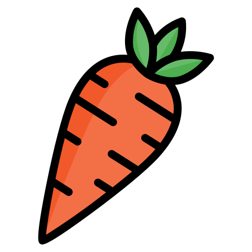
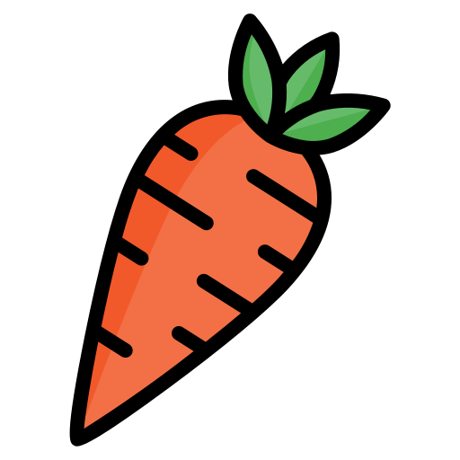
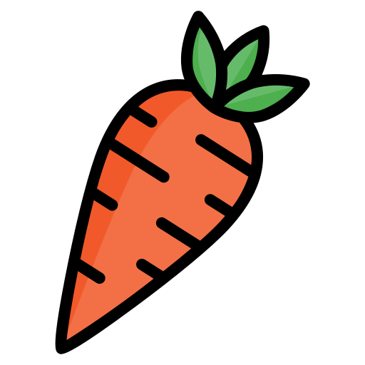

Multimedia

Disfruta de esta receta sencilla y deliciosa de arroz con pollo. En este video, aprenderás paso a paso cómo preparar un delicioso arroz con pollo, con un toque de especias y vegetales frescos. ¡Ideal para una comida equilibrada y llena de sabor!

Escucha este podcast sobre alimentación saludable. En este episodio, se abordan temas como la importancia de mantener una dieta balanceada, los beneficios de los alimentos frescos, y cómo integrar hábitos saludables en tu vida diaria.